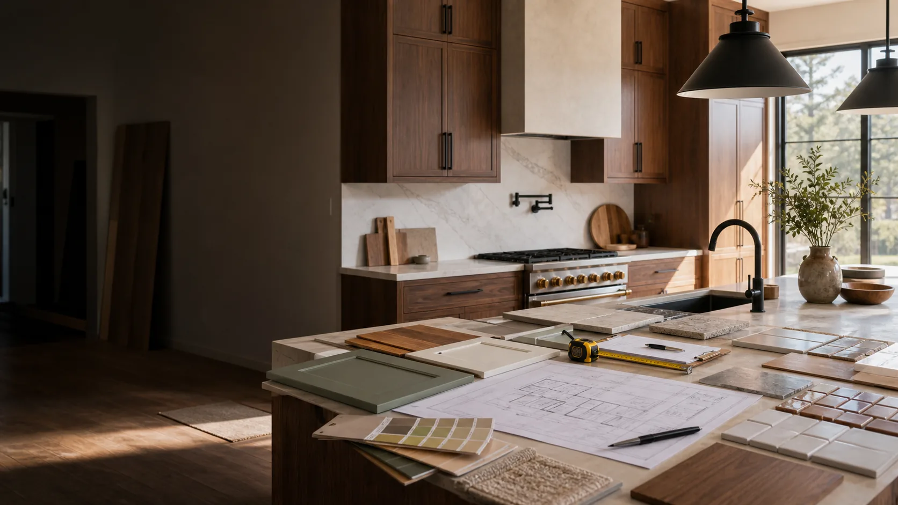

Design Planning Connections Before the Remodel Starts
Good planning can prevent costly surprises. We help homeowners connect with independent providers who can discuss kitchen layout, storage, materials, appliance zones, and project phasing.
Design Conversations May Cover
Design support can be practical, aesthetic, or both. The right provider depends on whether you need concepts, drawings, measurements, or full remodel coordination.
- Existing layout review, traffic flow, work triangle, appliance placement, and island feasibility.
- Storage strategy for pantry zones, drawers, trash, cookware, small appliances, and corner cabinets.
- Material selection for cabinets, counters, backsplash, flooring, fixtures, lighting, and paint.
- Budget framing, project priorities, scope limits, measurement needs, and provider coordination questions.
Layout Logic
Discuss how the kitchen should support cooking, cleanup, storage, seating, and movement through the home.
Material Direction
Clarify what decisions must be made early so cabinets, surfaces, tile, fixtures, and flooring work together.
Budget Priorities
Ask which upgrades carry the most cost and where a practical material substitution may help protect the budget.
Start With Your Goals
Share what frustrates you about the current kitchen, what must stay, and what would make the room easier to use.
- Add photos of the current kitchen.
- Include rough measurements or room size.
- Share timing, budget range, and priorities.



Design Requests Should Explain Function First
A beautiful kitchen still has to work. Layout and design conversations should describe traffic flow, storage issues, appliance habits, seating needs, and the decisions that are already fixed.
Prepare Before Contact
- What frustrates you about the current kitchen
- Measurements or a simple sketch
- Appliances that will stay or change
- Style references and material preferences
Ask the Provider
- What drawings or plans are included
- How revisions are handled
- Whether structural changes are being proposed
- How design decisions affect budget

Best for homeowners who are unsure whether to keep the existing footprint, change cabinet runs, add an island, or improve workflow.
Good Layout Planning Starts With How the Kitchen Is Actually Used
Layout help is not only about making the kitchen prettier. It should clarify traffic flow, prep zones, appliance relationships, storage gaps, seating, lighting, and which changes may require construction or licensed trade work.
Workflow
Cooking path, cleanup zone, prep surface, pantry access, appliance doors, and family traffic.
Room limits
Windows, doors, structural walls, vents, plumbing walls, ceiling height, and floor transitions.
Design package
Cabinet style, counters, backsplash, hardware, lighting, flooring, and finish direction.
Build reality
Which design ideas require demolition, permits, electrical, plumbing, or cabinet customization.
Before You Speak With a Provider
- Describe what frustrates you most about the current kitchen.
- Share rough dimensions, photos, and appliance locations.
- Ask how design recommendations translate into provider-ready scope notes.